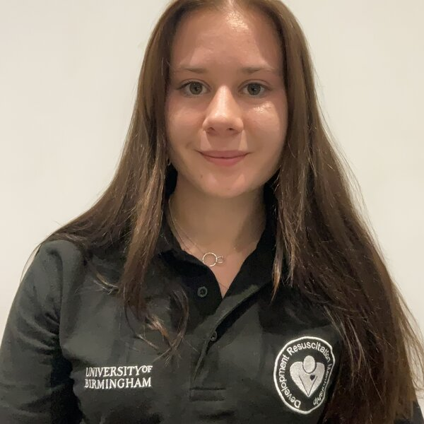

Postgraduate leads and student chairs across the RMD UK network. For full site rosters, visit each site page.
Academic and clinical leads who oversee site programmes, research, and faculty development.
Jon Hulme
Course DirectorRMD Birmingham
Joe Alderman
Research LeadRMD Birmingham
Lead to be added
Postgraduate LeadRMD Bristol
Lead to be added
Postgraduate LeadRMD Warwick
Lead to be added
Postgraduate LeadRMD Brunel
Student faculty chairs who lead day-to-day delivery at each site. For the full Birmingham roster, see the RMD Birmingham faculty page.

Tanwen Bird
Student Faculty ChairRMD Birmingham
Chair to be added
Student ChairRMD Bristol
Chair to be added
Student ChairRMD Warwick
Chair to be added
Student ChairRMD Brunel